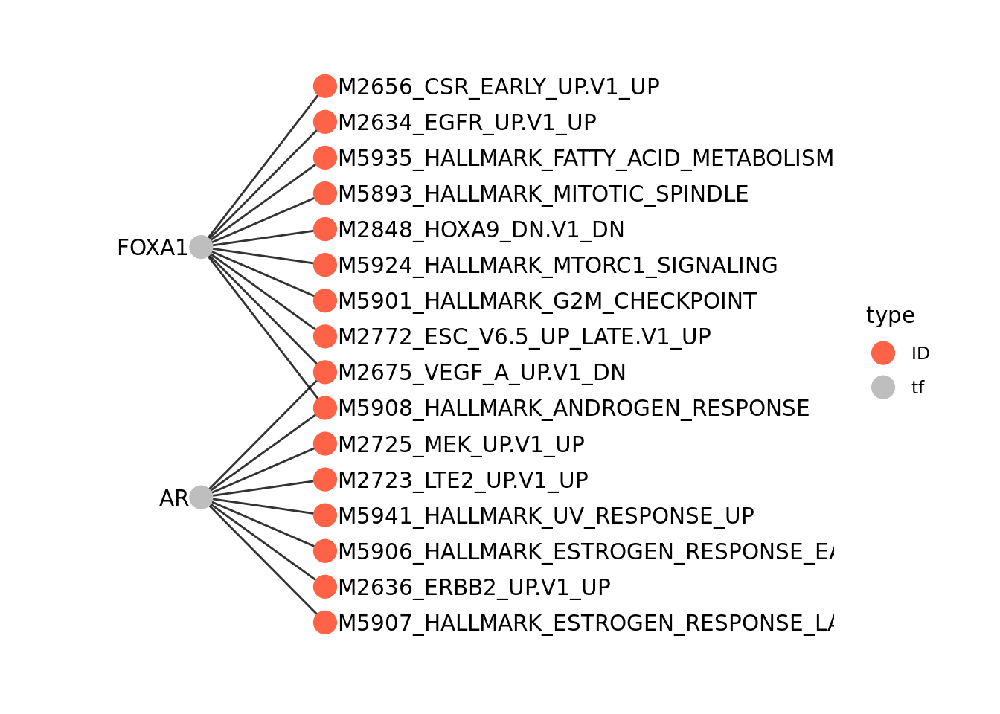

4 Construction of the gene regulatory network
This chapter outlines the basic steps for constructing a gene regulatory network, which takes the form of a tripartite graph: TF → RE → TG. In brief, TF occupancy data—derived from either ChIP-seq or motif information—are used to map transcription factors onto genomic regions (here, ATAC-seq peaks). These regions are then linked to their target genes by leveraging the assumption that chromatin accessibility and gene expression are highly correlated.
4.1 Download and format dataset
We will make use of the PBMC data set from 10x Genomics. The MAE object was uploaded to scMultiome for full reproducibility.
# Download the example dataset
mae <- scMultiome::PBMC_10x()
# Load peak matrix
PeakMatrix <- mae[["PeakMatrix"]]
# Load expression matrix
GeneExpressionMatrix <- mae[["GeneExpressionMatrix"]]Visualize the data.
scater::plotReducedDim(GeneExpressionMatrix,
dimred = "UMAP_RNA",
text_by = "cell_type",
colour_by = "cell_type",
point_size = 0.3,
point_alpha = 0.3)
4.2 Retrieve TF occupancy data
We recommend using ChIP-seq data—rather than motifs—as the proxy for TF occupancy. The gold standard in the field is to use sample-matched ChIP-seq for TF binding. To support this, we provide both sample-specific and tissue-specific ChIP-seq peak sets. However, sample-matched or tissue-matched ChIP-seq data are not available for many factors. To address this, we include a set of pan-tissue ChIP-seq peaks, generated by merging data across multiple samples and lineages; this serves as the default TF occupancy source. Benchmarking in our manuscript demonstrates that pan-tissue ChIP-seq still outperforms motif-based annotations for TF activity inference and target-gene recovery. In addition, ChIP-seq offers a key advantage over motifs in enabling GRN inference for transcriptional co-regulators that lack known motifs.
One limitation of ChIP-seq–based occupancy is that its accuracy depends on the underlying experimental quality. We applied several quality-control filters to the ChIP-seq data included (see Methods in the manuscript), but some factors still exhibit very large numbers of binding sites (>100k). This may reflect true biology or simply false positives. In such cases, filtering TF occupancy based on the intersection of ChIP-seq peaks and motif sites (see next chapter) can be helpful.
4.2.1 ChIP-seq data
We retrieve a GRangesList object containing the binding sites of all the transcription factors and co-regulators. These binding sites are derived from bulk ChIP-seq data in the ChIP-Atlas and ENCODE databases, and merged across multiple cell lines or tissues. Currently, human genomes hg19 and hg38 and mouse mm10 are supported. All ChIP-seq and motif binding sites are hosted on ExperimentHub. The initial download may take some time, but the data are cached for subsequent use.
## GRangesList object of length 1558:
## $AEBP2
## GRanges object with 2700 ranges and 0 metadata columns:
## seqnames ranges strand
## <Rle> <IRanges> <Rle>
## [1] chr1 9792-10446 *
## [2] chr1 942105-942400 *
## [3] chr1 984486-984781 *
## [4] chr1 3068932-3069282 *
## [5] chr1 3069411-3069950 *
## ... ... ... ...
## [2696] chrY 8465261-8465730 *
## [2697] chrY 11721744-11722260 *
## [2698] chrY 11747448-11747964 *
## [2699] chrY 19302661-19303134 *
## [2700] chrY 19985662-19985982 *
## -------
## seqinfo: 25 sequences from an unspecified genome; no seqlengths
##
## ...
## <1557 more elements>For both ChIP-Atlas and ENCODE data, we also provide sample-specific TF binding sites. They are retrieved as a list of GrangesList objects, by specifying atlas.sample or encode.sample in the source argument.
grl_list_sample_atlas <- getTFMotifInfo(genome = "hg38", source = "atlas.sample")
head(names(grl_list_sample_atlas))## [1] "ML-2" "hTERT RPE-1" "DLD-1" "293" "HeLa"
## [6] "MCF-7"Then we need to access a specific list element by providing the sample of interest. Here we choose "Peripheral blood mononuclear cells".
## GRangesList object of length 2:
## $EZH2
## GRanges object with 14399 ranges and 0 metadata columns:
## seqnames ranges strand
## <Rle> <IRanges> <Rle>
## [1] chr1 9949-10539 *
## [2] chr1 28949-29442 *
## [3] chr1 180750-181044 *
## [4] chr1 199296-200054 *
## [5] chr1 629280-630005 *
## ... ... ... ...
## [14395] chrUn_KI270435v1 91984-92197 *
## [14396] chrUn_KI270512v1 252-395 *
## [14397] chr15_KI270727v1_ran.. 80081-80345 *
## [14398] chr1_KI270706v1_random 165426-165601 *
## [14399] chrUn_KI270743v1 152955-153105 *
## -------
## seqinfo: 89 sequences from an unspecified genome; no seqlengths
##
## $HIF1A
## GRanges object with 2199 ranges and 0 metadata columns:
## seqnames ranges strand
## <Rle> <IRanges> <Rle>
## [1] chr1 10009-10248 *
## [2] chr1 10359-10460 *
## [3] chr1 180748-180991 *
## [4] chr1 631239-631293 *
## [5] chr1 631989-632060 *
## ... ... ... ...
## [2195] chrY 56826777-56826855 *
## [2196] chrY 56847169-56847217 *
## [2197] chrY 56850383-56850460 *
## [2198] chrY 56850790-56850873 *
## [2199] chrY 56851105-56851159 *
## -------
## seqinfo: 89 sequences from an unspecified genome; no seqlengthsAlternatively, we might retrieve chip-seq data for "K562" cells present in the ENCODE database.
grl_list_sample_encode <- getTFMotifInfo(genome = "hg38", source = "encode.sample")
grl_list_sample_encode[["K562"]]## GRangesList object of length 468:
## $PYGO2
## GRanges object with 6664 ranges and 0 metadata columns:
## seqnames ranges strand
## <Rle> <IRanges> <Rle>
## [1] chr3 3110104-3110423 *
## [2] chr3 4225236-4225599 *
## [3] chr3 4350776-4351095 *
## [4] chr3 4467164-4467483 *
## [5] chr3 4533816-4534135 *
## ... ... ... ...
## [6660] chr13 99053615-99053934 *
## [6661] chr13 109707096-109707415 *
## [6662] chr13 110874168-110874531 *
## [6663] chr13 110963556-110963834 *
## [6664] chr13 112711615-112711978 *
## -------
## seqinfo: 54 sequences from an unspecified genome; no seqlengths
##
## ...
## <467 more elements>The tissue-specific chip-seq data are also available. They were compiled from the ChIP-Atlas database.
grl_list_tissue <- getTFMotifInfo(genome = "hg38", source = "atlas.tissue")
grl_list_tissue[["Blood"]]## GRangesList object of length 770:
## $`MLL-AF6`
## GRanges object with 477 ranges and 0 metadata columns:
## seqnames ranges strand
## <Rle> <IRanges> <Rle>
## [1] chr1 4303013-4303150 *
## [2] chr1 71928076-71928393 *
## [3] chr1 87300735-87300856 *
## [4] chr1 91387234-91387457 *
## [5] chr1 108771977-108772126 *
## ... ... ... ...
## [473] chrY 56838883-56839022 *
## [474] chrY 56843654-56843767 *
## [475] chrY 56848774-56848878 *
## [476] chrY 56850362-56850481 *
## [477] chrY 56851423-56851611 *
## -------
## seqinfo: 183 sequences from an unspecified genome; no seqlengths
##
## ...
## <769 more elements>The advantage of using tissue- or sample-specific ChIP-seq data is that they accurately reflect TF binding sites that are characteristic of a given cell type or cell line. The downside is the small number of factors and peaks due to the limited number of experiments used to compile the data.
## [1] 1558## [1] 770# Peripheral blood mononuclear cells sample
length(grl_list_sample_atlas[["Peripheral blood mononuclear cells"]])## [1] 2## [1] 468# calculate the total number of regions contained in each grl
# pan-tissue
format(sum(unlist(lapply(grl, length))), big.mark=",")## [1] "54,501,169"## [1] "18,684,867"# Peripheral blood mononuclear cells sample
format(sum(unlist(lapply(grl_list_sample_atlas[["Peripheral blood mononuclear cells"]], length))), big.mark=",")## [1] "16,598"# K562 cell line sample
format(sum(unlist(lapply(grl_list_sample_encode[["K562"]], length))), big.mark=",")## [1] "6,352,422"Lastly, users can always supply their custom ChIP-seq data and convert them into GrangesList.
4.2.2 Motif information
While ChIP-seq data provide experimentally determined TF biding sites, some users might prefer to start from motif sequences as positions of TF occupancy. If motif is chosen for mode, getTFMotifInfo retrieves the motif information from the CIS_BP database and scans the peak regions for presence of motifs.
4.3 Link ATACseq peaks to target genes
Next, we link ATAC-seq peaks to their putative target genes. We assign a peak to a gene if it falls within a size window (default ±250kb) and if the chromatin accessibility of the peak and expression of the target gene is highly correlated across cell aggregates.
To calculate correlations, we create cell aggregates (or metacells) by performing deterministic k-means clustering on the reduced dimensionality matrix (for description of the algorithm description, see https://ltla.github.io/CppKmeans/classkmeans_1_1InitializeVariancePartition.html. Then we aggregate the counts for the gene expression and peak matrices and normalize them by the number of cells. Correlations are thus computed on the averaged gene expression and chromatin accessibility.
4.3.1 Optimize the number of metacells (optional)
It is important to pick the correct value for the cellNum parameter, which controls the number of metacells used for aggregation. Too few metacells can obscure biologically meaningful variation, while overly fine-grained aggregation may fail to sufficiently stabilize the signal, leaving substantial noise arising from data sparsity, technical bias, or biologically irrelevant fluctuations. In practice, we aim to strike a balance between these extremes and identify an optimal metacell number. This is the motivation behind the introduction of the new function optimizeMetacellNumber, released with epiregulon v2.0.0.
The function computes mean empirical p-values across a range of metacell numbers, then fits a quadratic model that regresses these p-values against the square root of the mean number of cells per metacell. Squaring the value of \(x_{min}\) yields the estimated optimal mean number of cells per metacell.
set.seed(1010)
cellNum <- optimizeMetacellNumber(expMatrix = GeneExpressionMatrix,
peakMatrix = PeakMatrix,
exp_assay = "normalizedCounts",
peak_assay = "counts",
reducedDim = reducedDim(GeneExpressionMatrix, "LSI_RNA"),
BPPARAM = BiocParallel::SerialParam(progressbar = FALSE))
cellNum## A CellNumSol object.
## Estimated optimal number of cells per cluster: 355.89
## Evaluation points: 4.47213595499958, 11.1403077174484, 14.4743935986728, 17.8084794798972, 21.1425653611216, 24.4766512423461, 27.8107371235705, 31.1448230047949
## Mean p-values: 0.471653227222363, 0.463506475168375, 0.462227101701293, 0.463629568404436, 0.461326242635391, 0.463491875442245, 0.46758445654325, 0.467161192360535We can check specifically the estimated optimal number of cells per cluster (mean metacell size) by computing the square of the solution slot.
## [1] 355.886The plot function allows for visualization of the function performance at different evaluation points. The estimated optimum is marked by a red dashed line.

The object returned by optimizeMetacellNumber can be passed to calculateP2G as the cellNum parameter. User might also provide a numeric to directly set the mean number of cells per cluster.
4.3.2 Find peak-target gene links within a defined distance
The default method for linking regulatory elements to target genes is to compute correlations at the metacell level. A null distribution is generated by correlating randomly selected peak–gene pairs located on different chromosomes. Correlations are then calculated for all peak–gene pairs within a specified genomic distance (default ±250 kb). By default, only links with a p-value < 0.05 are retained, although this behavior can be modified via the cutoff_sig argument.
Although the algorithm for identifying metacell clusters is deterministic, reproducibility still requires setting a random seed because the null distribution is estimated from randomly sampled peak–gene pairs. To reduce the stochasticity introduced by this random sampling, one may increase the nRandConn parameter, which controls the number of random connections drawn.
If cluster labels are provided, peak–gene correlations are also computed within each cluster. A peak–gene link is retained if it passes the p-value threshold in any cluster. The resulting expanded list of links captures both inter- and intra-cluster variation.
set.seed(1010)
p2g <- calculateP2G(peakMatrix = PeakMatrix,
expMatrix = GeneExpressionMatrix,
exp_assay = "normalizedCounts",
reducedDim = reducedDim(GeneExpressionMatrix, "LSI_RNA"),
cellNum = cellNum,
BPPARAM = BiocParallel::SerialParam(progressbar = FALSE))## Using epiregulon to compute peak to gene links...
## Creating metacells...
## Looking for regulatory elements near target genes...
## Computing correlations...## DataFrame with 72838 rows and 10 columns
## idxATAC chr start end idxRNA target
## <integer> <character> <integer> <integer> <integer> <array>
## 1 7 chr1 860832 861332 16 FAM87B
## 2 9 chr1 869608 870108 20 AL645608.6
## 3 10 chr1 897218 897718 30 HES4
## 4 13 chr1 904517 905017 18 LINC01128
## 5 23 chr1 941054 941554 29 AL645608.7
## ... ... ... ... ... ... ...
## 72834 159273 chrX 155094423 155094923 36424 VBP1
## 72835 159278 chrX 155216170 155216670 36424 VBP1
## 72836 159279 chrX 155242243 155242743 36426 CLIC2
## 72837 159283 chrX 155334892 155335392 36426 CLIC2
## 72838 159285 chrX 155611289 155611789 36434 TMLHE
## Correlation p_val_peak_gene FDR_peak_gene distance
## <matrix> <matrix> <matrix> <integer>
## 1 0.836218 0.00984125 0.471797 43461
## 2 -0.526697 0.03642875 0.552536 34724
## 3 0.657448 0.04814514 0.591177 102261
## 4 0.702887 0.03395543 0.547711 76919
## 5 -0.545817 0.03044073 0.540428 56495
## ... ... ... ... ...
## 72834 0.747270 0.02415580 0.526717 102082
## 72835 0.754892 0.02247051 0.518898 19163
## 72836 0.807040 0.01373198 0.488274 91869
## 72837 0.939910 0.00189335 0.417877 278
## 72838 0.807340 0.01369036 0.488274 10864.3.3 Link peaks to the nearest genes
Alternatively, we can identify the downstream targets of each regulatory region by assigning them to their nearest gene. The maxDist argument specifies the maximum allowed distance between a regulatory element and a gene for a link to be made. As before, correlations are computed and only those exceeding the threshold are retained.
set.seed(1010)
p2g_nearest <- calculateP2G(peakMatrix = PeakMatrix,
expMatrix = GeneExpressionMatrix,
exp_assay = "normalizedCounts",
reducedDim = reducedDim(GeneExpressionMatrix, "LSI_RNA"),
assignment_method = "nearest",
BPPARAM = BiocParallel::SerialParam(progressbar = FALSE)
)## Using epiregulon to compute peak to gene links...## Value of the paramater 'cellNum' has not been optimized. Considerrunning function 'optimizeMetacellNumber' and use output to set'cellNum'.## Creating metacells...
## Looking for regulatory elements near target genes...
## Computing correlations...4.3.4 Filter peak-target gene links
The number of possible links between target genes and regulatory elements can be large. Therefore, we need to reduce this number, keeping only those links for which we have support in our data. By default, calculateP2G uses a p-value threshold to pinpoint putative connections between target genes and regulatory regions. However, users may also choose to use FDR or rely directly on the correlation. This behavior is controlled by the cutoff_stat argument. If Correlation is specified, the default threshold of 0.5 is used, as defined by cor_cutoff. Note that only links with correlation greater than this threshold will be kept, potentially ignoring meaningful highly negative correlations. Additionally, the correlation distribution might vary with dataset size, resulting in different FDRs for the same correlation threshold. Threshold for p_val and FDR is set by the cutoff_sig argument.
4.4 Add TF occupancy to peaks
The next step is to add TF binding information to peak regions.
## Computing overlap...## Success!## idxATAC idxTF tf
## 711 7 12 ARID5B
## 712 7 91 ELF3
## 713 7 150 HEY1
## 714 7 159 HNF4A
## 715 7 160 HNF4G
## 716 7 217 MAX4.5 Generate regulons
A DataFrame, representing the inferred regulons, is then generated. The DataFrame object consists of the following columns:
idxATAC- index of the peak in the peak matrixchr- chromosome numberstart- start position of the peakend- end position of the peakidxRNA- index in the gene expression matrix corresponding to the target genetarget- name of the target genecorr- correlation between target gene expression and the chromatin accessibility at the peak. If cluster labels are provided, this field is a matrix with columns names corresponding to correlation across all cells and for each of the clusters.p_val_peak_gene- empirical p-value of the correlation between peak and target gene. If cluster labels are provided, this field is a matrix with columns names corresponding to p-value for all cells and for each of the clusters.FDR_peak_gene- false discovery rates calculated based on the empirical p-value of the correlations between peaks and target genes. If cluster labels are provided, this field is a matrix with columns names corresponding to FDR for all cells and for each of the clusters.distance- distance between the transcription start site of the target gene and the middle of the peakidxTF- index in the gene expression matrix corresponding to the transcription factortf- name of the transcription factor
## DataFrame with 9254974 rows and 12 columns
## idxATAC chr start end idxRNA target corr
## <integer> <character> <integer> <integer> <integer> <array> <matrix>
## 1 7 chr1 860832 861332 16 FAM87B 0.836218
## 2 7 chr1 860832 861332 16 FAM87B 0.836218
## 3 7 chr1 860832 861332 16 FAM87B 0.836218
## 4 7 chr1 860832 861332 16 FAM87B 0.836218
## 5 7 chr1 860832 861332 16 FAM87B 0.836218
## ... ... ... ... ... ... ... ...
## 9254970 159285 chrX 155611289 155611789 36434 TMLHE 0.80734
## 9254971 159285 chrX 155611289 155611789 36434 TMLHE 0.80734
## 9254972 159285 chrX 155611289 155611789 36434 TMLHE 0.80734
## 9254973 159285 chrX 155611289 155611789 36434 TMLHE 0.80734
## 9254974 159285 chrX 155611289 155611789 36434 TMLHE 0.80734
## p_val_peak_gene FDR_peak_gene distance idxTF tf
## <matrix> <matrix> <integer> <integer> <character>
## 1 0.00984125 0.471797 43461 12 ARID5B
## 2 0.00984125 0.471797 43461 91 ELF3
## 3 0.00984125 0.471797 43461 150 HEY1
## 4 0.00984125 0.471797 43461 159 HNF4A
## 5 0.00984125 0.471797 43461 160 HNF4G
## ... ... ... ... ... ...
## 9254970 0.0136904 0.488274 1086 348 SMARCC1
## 9254971 0.0136904 0.488274 1086 360 SPI1
## 9254972 0.0136904 0.488274 1086 432 ZBTB7A
## 9254973 0.0136904 0.488274 1086 630 GFP
## 9254974 0.0136904 0.488274 1086 785 MYH11